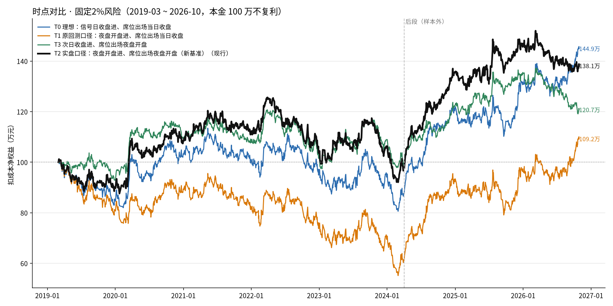
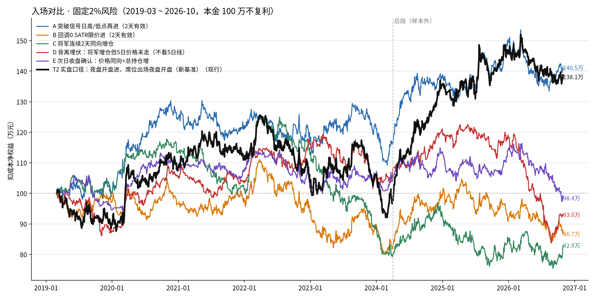
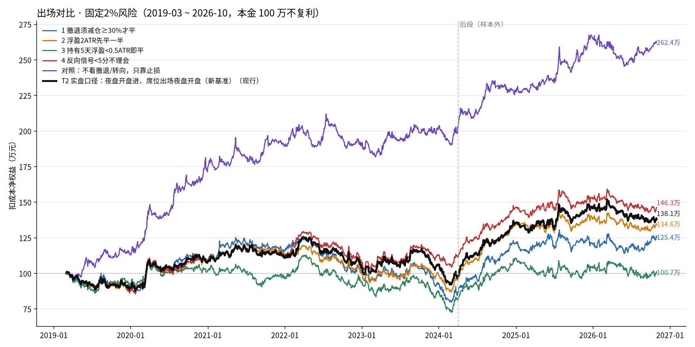

区间 2019-03-01 起，前段/后段分界 2024-04-01。本金 100 万，扣成本（每边 1 跳 + 万 0.5）。蓝色行 = 新基准（实盘口径）。“夜盘开盘”= 下一交易日开盘价（有夜盘的品种即 21:00）。



| 组 | 方案 | 笔数 | 撤单 | 胜率 | PF | 持有 | 净收益 | 年化 | 回撤 | 前段净 | 后段净 | 2019 | 2020 | 2021 | 2022 | 2023 | 2024 | 2025 | 2026 |
|---|---|---|---|---|---|---|---|---|---|---|---|---|---|---|---|---|---|---|---|
| 时点 | T0 理想：信号日收盘进、席位出场当日收盘 | 2253 | 0 | 54.7% | 1.16 | 2.7 | 430,506 | 4.8% | 29.0% | -112,074 | 542,580 | -14.8万 | 17.9万 | -3.0万 | -3.5万 | -0.6万 | 24.9万 | 10.6万 | 11.5万 |
| 时点 | T1 原回测口径：夜盘开盘进、席位出场当日收盘 | 2254 | 0 | 52.7% | 1.1 | 2.7 | 71,901 | 0.9% | 45.5% | -372,821 | 444,722 | -19.0万 | 8.0万 | -7.3万 | -6.0万 | -4.2万 | 21.1万 | 4.3万 | 10.1万 |
| 时点 | T2 实盘口径：夜盘开盘进、席位出场夜盘开盘（新基准） | 1969 | 0 | 53.2% | 1.16 | 2.6 | 369,650 | 4.2% | 26.7% | 979 | 368,671 | -10.0万 | 17.4万 | 3.6万 | -6.4万 | 1.7万 | 29.8万 | 11.3万 | -10.5万 |
| 时点 | T3 次日收盘进、席位出场夜盘开盘 | 1968 | 0 | 50.5% | 1.17 | 2.6 | 199,590 | 2.4% | 19.3% | 11,791 | 187,799 | -7.1万 | 16.4万 | -2.6万 | -4.6万 | 6.8万 | 13.6万 | 12.7万 | -15.3万 |
| 入场 | A 突破信号日高/低点再进（2天有效） | 1623 | 633 | 53.5% | 1.2 | 2.4 | 399,437 | 4.5% | 16.1% | 185,063 | 214,374 | 0.3万 | 23.8万 | -2.0万 | -3.5万 | 4.4万 | 15.6万 | 11.7万 | -10.3万 |
| 入场 | B 回调0.5ATR限价进（2天有效） | 1298 | 1137 | 51.3% | 1.05 | 3.2 | -142,311 | -2.0% | 28.0% | -165,523 | 23,212 | -2.9万 | -0.7万 | 0.9万 | -3.5万 | -4.0万 | 9.7万 | -7.2万 | -6.5万 |
| 入场 | C 将军连续2天同向增仓 | 1147 | 0 | 51.8% | 1.02 | 3.5 | -209,570 | -3.0% | 39.8% | -187,362 | -22,208 | 0.1万 | 13.4万 | -10.9万 | 10.8万 | -23.7万 | 3.1万 | -6.9万 | -6.9万 |
| 入场 | D 背离埋伏：将军增仓但5日价格未走（不看5日线） | 909 | 0 | 54.5% | 1.05 | 4.6 | -83,167 | -1.1% | 31.7% | 58,123 | -141,290 | -12.7万 | 17.9万 | -1.0万 | 13.1万 | -12.2万 | 15.7万 | -2.4万 | -26.7万 |
| 入场 | E 次日收盘确认：价格同向+总持仓增 | 1108 | 2423 | 50.4% | 1.12 | 2.0 | -21,201 | -0.3% | 16.4% | 42,355 | -63,556 | -5.4万 | 14.5万 | -2.1万 | -3.9万 | 3.2万 | 7.2万 | 1.3万 | -16.8万 |
| 出场 | 1 撤退须减仓≥30%才平 | 1699 | 0 | 52.0% | 1.13 | 3.0 | 244,845 | 2.9% | 36.3% | -148,951 | 393,796 | -10.4万 | 17.3万 | 7.6万 | -13.2万 | -10.3万 | 27.7万 | 1.7万 | 4.0万 |
| 出场 | 2 浮盈2ATR先平一半 | 2378 | 0 | 57.9% | 1.15 | 2.6 | 334,670 | 3.9% | 28.3% | -21,210 | 355,880 | -9.5万 | 18.2万 | 5.1万 | -13.1万 | -0.2万 | 34.2万 | 5.0万 | -6.3万 |
| 出场 | 3 持有5天浮盈<0.5ATR即平 | 2377 | 0 | 51.1% | 1.1 | 2.0 | -6,238 | -0.1% | 35.8% | -163,066 | 156,828 | -7.3万 | 8.5万 | -3.5万 | -4.7万 | -5.3万 | 22.5万 | -4.8万 | -6.1万 |
| 出场 | 4 反向信号<5分不理会 | 1921 | 0 | 53.5% | 1.17 | 2.6 | 436,248 | 4.9% | 20.5% | 142,796 | 293,452 | -12.3万 | 19.9万 | 3.6万 | -3.1万 | 5.1万 | 33.6万 | 7.2万 | -10.4万 |
| 出场 | 对照：不看撤退/转向，只靠止损 | 622 | 0 | 40.7% | 1.61 | 8.2 | 1,532,967 | 13.0% | 14.3% | 928,339 | 604,628 | 11.0万 | 60.4万 | 17.6万 | -2.7万 | 7.2万 | 30.7万 | 40.7万 | -11.7万 |